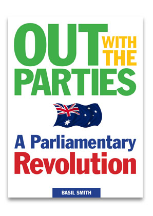
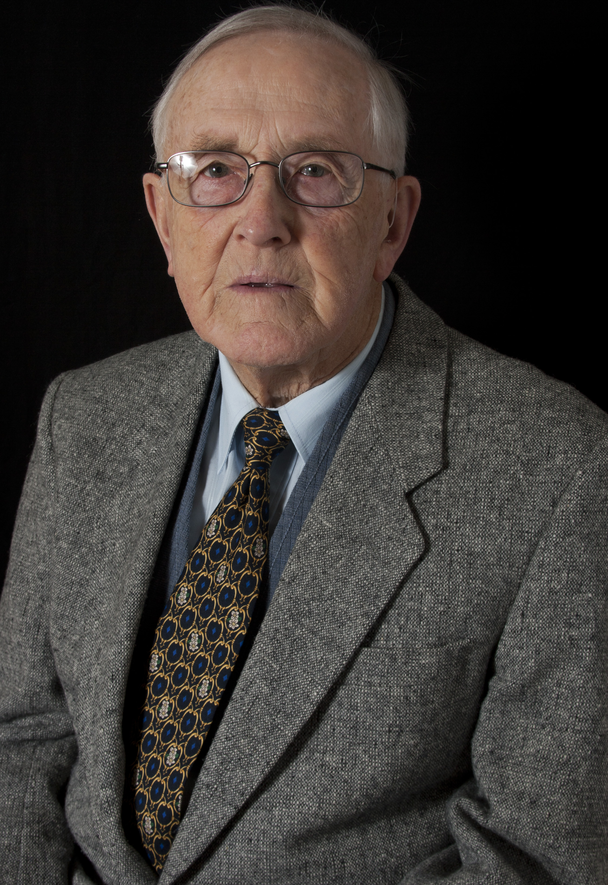

Second book

Eighties

November 2011
We cannot entrust our future to party politicians, whose allegiance to the people comes second to party and other minority interests, which control parliament through the open-voting system in parliament
Only ballots in our parliaments, for the election of ministers, and for decisions on all debated issues, can bring about the political decisiveness, the accountability, the independent representation and the participation of the people, in a genuine democracy which alone can enable an effective and prompt response to the problems of our world.
Global warming, resource depletion, population explosion, restless religions, all threaten us with much greater political pressures in the future, we will need all of the character, wit and wisdom of all of us to bring about the best answers - together - as a united people.
By disconnecting our representatives from party power in parliament and reconnecting them to their constituents in local public forums, this reform has the power to 'change the face of politics', by referendum, for ever.
Only ballots in our parliaments, for the election of ministers, and for decisions on all debated issues, can bring about the political decisiveness, the accountability, the independent representation and the participation of the people, in a genuine democracy which alone can enable an effective and prompt response to the problems of our world.
Global warming, resource depletion, population explosion, restless religions, all threaten us with much greater political pressures in the future, we will need all of the character, wit and wisdom of all of us to bring about the best answers - together - as a united people.
Objective:
The adoption (by referendum) of the secret ballot in our parliaments, to freely elect each Minister and determine the outcome of each debate.By disconnecting our representatives from party power in parliament and reconnecting them to their constituents in local public forums, this reform has the power to 'change the face of politics', by referendum, for ever.
The secret ballot in our parliaments, will:
- End party-line voting,
- Abolish party control of its members,
- Remove the confrontation and fears of party politics,
- Bring forth objective, efficient, calm debate in parliament,
- Abolish unwarranted secrecy,
- Create open government,
- Mean real representation by our own representatives,
- Cause MPs to convene regular local meetings to work together with their constituents.
- Enable our democracy to be a 'moral enabler' - Gebhardt.
- Create a surge in participatory democracy,
- Create a working unity between people and representatives,
- Create a real 'government by the people',
- Resurrect community confidence in parliamentary democracy,
- Enable sounder public policies and outcomes,
- Bring in peace, harmony, confidence and strength, nationally,
- Give to the world the example of a real democracy the world desperately needs.
We welcome all who wish to advance the cause of real democracy,
which demands that the secret ballot decide all elections and all debated issues,
to advance the right and the power of the people to take part in and responsibility for government at all levels within the nation.
More...
Real Democracy = The SECRET BALLOT In Parliaments, Board Rooms, Clubs, School Councils, Churches, etc. etc.